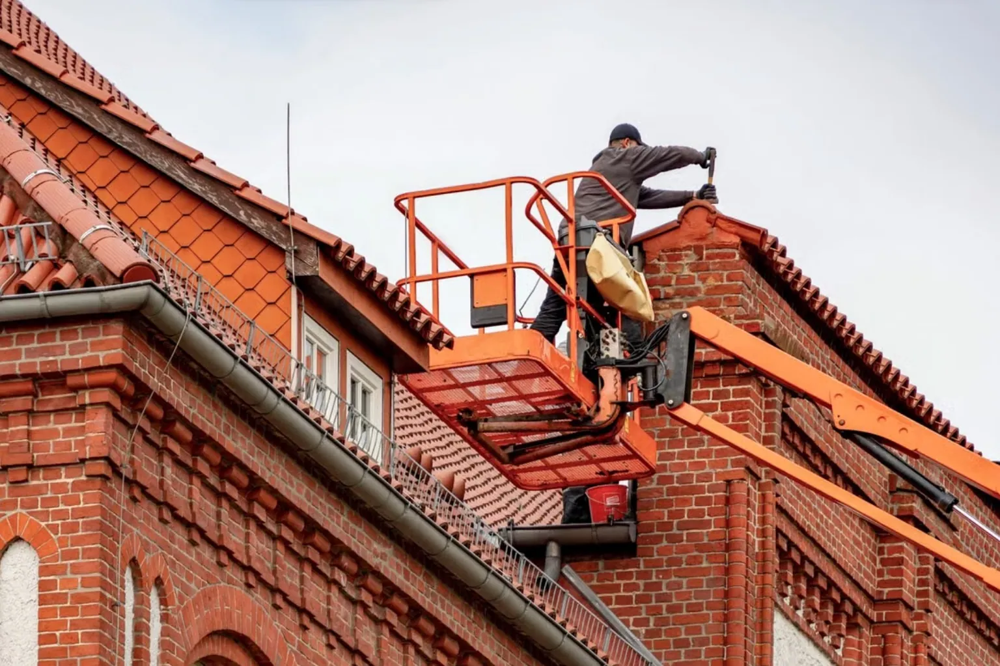
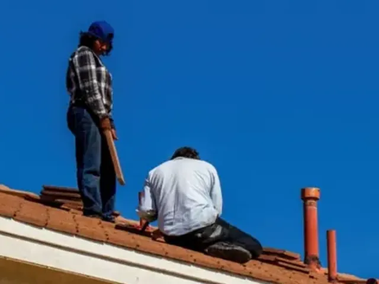
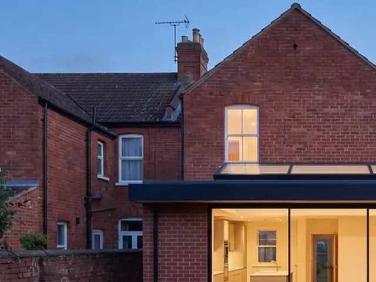
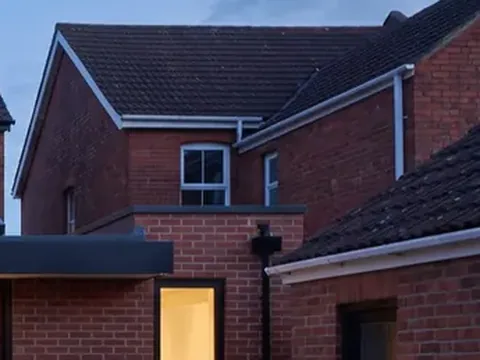

Drag the tape line. Left of it: the site Dunmore Roofing has had since 2011. Right of it: the rebuild. Same firm, same phone number, different decade. Both sides are live pages, not screenshots.
DUNMORE ROOFING SERVICES
~ Welcome To Our Web Site ~
Welcome
Dunmore Roofing Services is a family run business with many years experience in all aspects of roofing. We pride ourselves on a quality service at competitive prices. No job too big or too small.
We cover all local areas and all our work is fully guaranteed for your piece of mind. References available on request.
0191 498 0455
(office hours only)
Our Services
Slating & tiling, flat roofs, chimney work, guttering, fascias and soffits, storm damage, insurance work undertaken, UPVC cladding and much much more!!
© 2011 Dunmore Roofing Services · Site by Barry's Web Design
Roofers in North Tyneside since 2001
Roof repairs, priced from a photo.
Send a photo of the problem and you'll have a price the same day, with a date inside the week. 25 years on local roofs.

What we do

Repairs
Slipped slates, leaks and storm damage, fixed on the first visit where we can.

Flat roofs
Extensions and garages in EPDM or GRP, roof lanterns fitted, written guarantee.

Gutters & fascias
Cleared, repaired or replaced in uPVC, with photos before and after.
What actually changed
| Measure | Before | After | Why it matters |
|---|---|---|---|
| Ways to make contact | phone, office hours | call · WhatsApp · book | A caller who cannot ring at 7pm does not ring at 9am — they ring the next firm. |
| Works on a phone | no | built for it | Most local searches happen on a phone. A desktop-only site fails at the moment of intent. |
| Asks for the job photo | — | WhatsApp photo → price | A photo turns a vague enquiry into a priceable job without a site visit. |
| Shows proof | "references on request" | 187 reviews on the page | "References on request" asks the customer to do work. Reviews on the page do it for them. |
| Says who it's for & where | "all local areas" | named area in the headline | Naming the area is what makes the page match the search. |
| After-hours enquiry path | none | two, both answered by text | Roof leaks happen in the evening. That is exactly when the old site went quiet. |
What the old site was costing
Every figure above is an assumption you can change, not a measurement. Enquiry rates in particular vary enormously by trade and by how the traffic arrived — treat these as a way to think about the size of the gap, not a forecast. Nothing here is tracked or fetched.
What the rebuild actually involved
- 01Audit and measureWhere the old site leaked: no mobile layout, one contact route, no proof, invisible for the searches that matter.2–3 days
- 02Content and photographsReal job photos, the areas actually covered, prices or a price path, reviews gathered and put on the page.1–2 weeks
- 03BuildMobile first, call and WhatsApp buttons above the fold, a booking path, and a photo-to-quote route.2–3 weeks
- 04MigrationSame domain, redirects from the old pages so nothing already ranking is lost, business profile brought in line.2–3 days
- 05Launch and watchEnquiries tracked by route, so the next change is decided by what happened rather than opinion.ongoing
Timings are typical for a single-location trade with existing photographs. Dunmore Roofing is invented, as is every figure on this page.